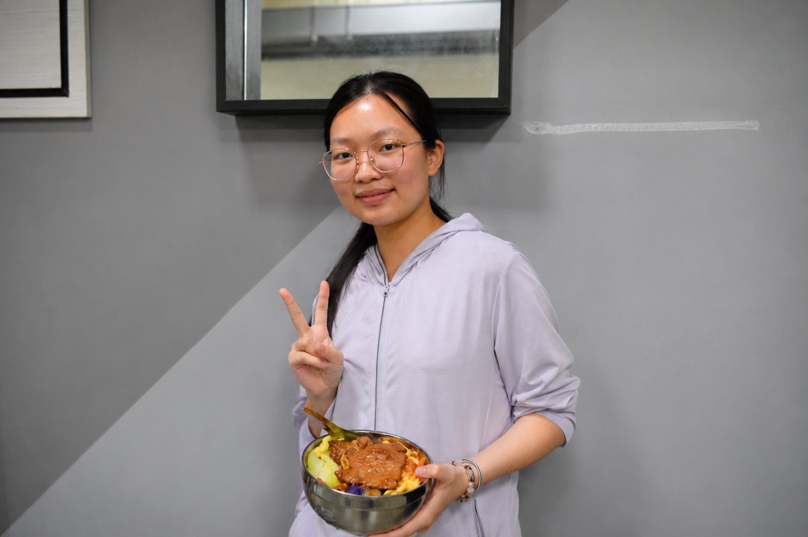
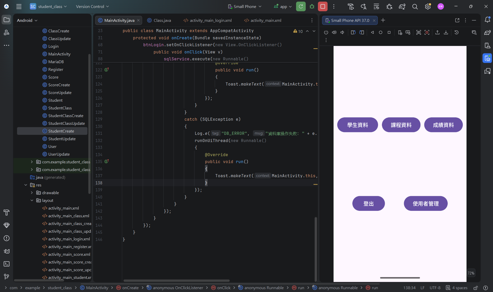
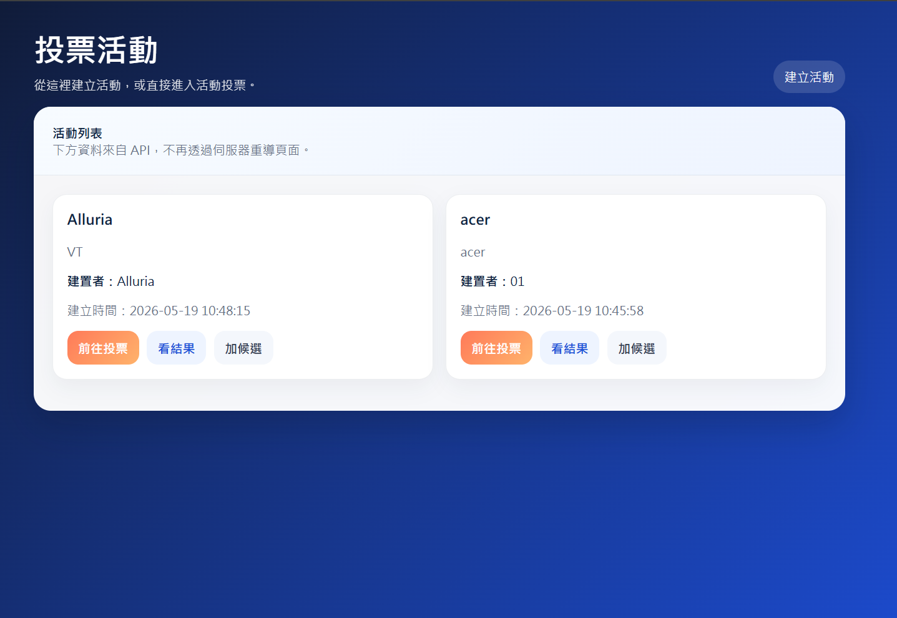
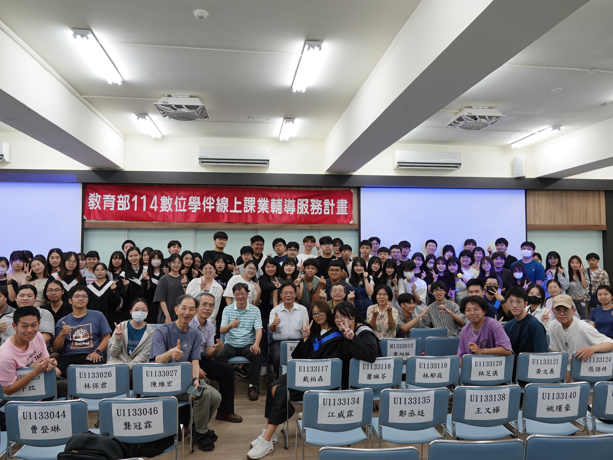

獲獎與榮譽
-
• 書卷獎獎學金（114年）

-
• 英文單字競賽（113年）


就讀於國立聯合大學資訊管理學系，對網頁設計、前端開發與資料分析充滿熱情。希望透過技術與設計創造更友善的使用者體驗。
興趣： 網路管理、網頁設計、大數據分析、閱讀
目標： 成為具備專業技術與美學素養的數位產品設計者
2024 年至今（預計畢業2028年）
重要課程：程式設計、資料結構、資料庫系統管理、網頁程式設計。
選修課程：
公司名稱｜時間
角色、貢獻與學習到的技能。

使用 Android Studio 開發的學生與課程管理應用程式。

可新增投票活動與項目，使用 AJAX 與後端互動。
過去，資管人扮演的是規格翻譯的角色，將各部門的需求轉譯成工程師聽得懂的規格書。 然而，隨著 AI 與低代碼（Low-Code）工具的普及，資訊科技的操作門檻大幅降低，非資訊背景的員工也能親自動手開發工具。 我覺得在這個時代，資管人的核心價值會產生轉變，不再只是代筆的翻譯，而是整間企業數位架構的導航與警察。 未來，我們的工作可能會是引導非技術人員避免走入開發彎路，並化解資安漏洞百出的潛在風險。 我們必須站在宏觀的視角，確保各部門自行開發的數位小工具不會互相衝突、產生資料孤島，而是能完美、安全地融入整間公司的資訊大架構中。
